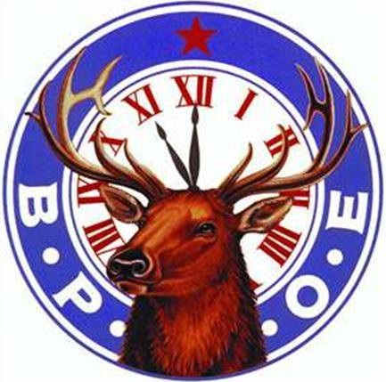

Tiffin Elks
Instituted on July 11, 1888, the current building was opened in 1898. The Tiffin Elks occupies the tenth oldest lodge built exclusively as an Elk's lodge. Our lodge is known for our unique Elk's history, decorations, ballroom, and extraordinary Lodge Room. This Fraternal Order was founded "To promote and practice the four cardinal virtues of Charity, Justice, Brotherly Love and Fidelity; to promote the welfare and enhance the happiness of its members; to quicken the spirit of American Patriotism and cultivate good fellowship." The national Order spends more than $80,000,000 every year for benevolent, educational and patriotic community-minded programs in such fields as benefitting special needs children, sponsoring Elks National Foundation scholarships, scouting, athletic teams, veterans' works, a national "Hoop Shoot" free-throw contest involving more than 3 million children, physical and occupational therapy programs and patriotic programs. The youth of our country have always been important to the Order. It is for this reason the Elks Drug Awareness Education Program was launched to warn primary grade students and their parents of the dangers in drug use. Additionally, every lodge observes June 14th as Flag Day, a tradition which the Elks began in 1907 and was later adopted by the Congress as an official observance.